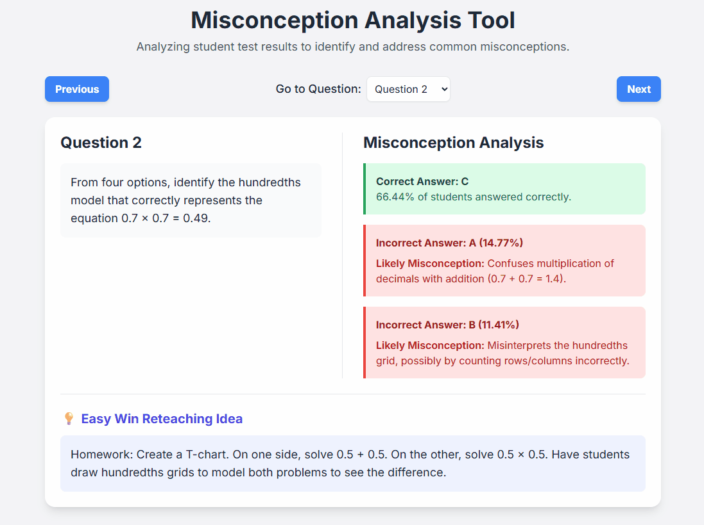

Misconception Analysis Tool
Turns test item analysis data into an interactive diagnostic tool, highlighting common student errors and offering instant reteaching ideas.
Launch Tool
Interactive Geography Explorer
An interactive, TEKS-aligned tool for exploring geographic locations. Features clickable pins with facts and an integrated quiz.
Launch Tool
Bubble Pop Math Game
A fun, fast-paced game where students pop numbered bubbles in order from least to greatest (or vice-versa).
Launch Tool
Spinning Wheel
A customizable retro-style spinning wheel. Enter options and spin to make a random choice, perfect for classroom activities.
Launch Tool
Mindful Mornings
A tool for Social-Emotional Learning (SEL) bell ringers and writing prompts, designed to foster mindfulness and character development.
Launch Tool